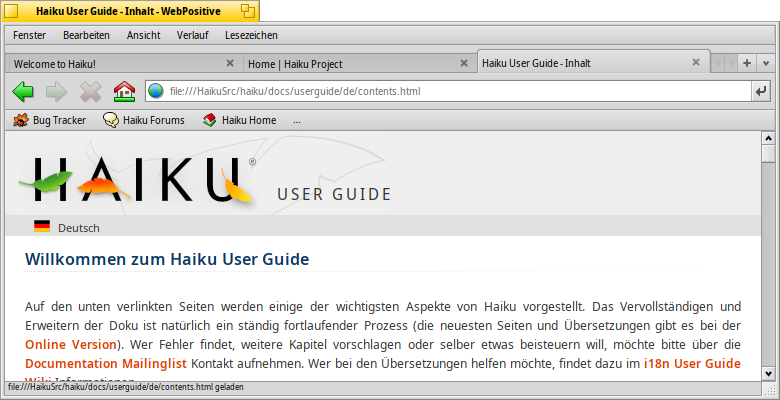
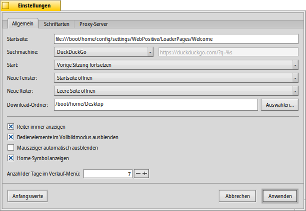
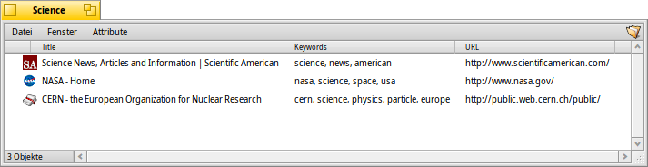
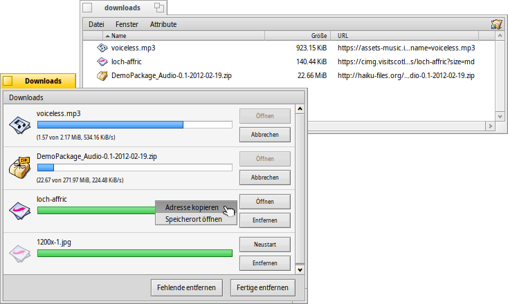

Deutsch
Deutsch Català
Català English
English Español
Español Français
Français Italiano
Italiano Magyar
Magyar Polski
Polski Português
Português Português (Brazil)
Português (Brazil) Română
Română Slovenčina
Slovenčina Suomi
Suomi Svenska
Svenska 中文 ［中文］
中文 ［中文］ Русский
Русский Українська
Українська 日本語
日本語 WebPositive
WebPositive
| Deskbar: | ||
| Ort: | /boot/system/apps/WebPositive | |
| Einstellungen: | ~/config/settings/WebPositive/ - Konfigurationsdateien, Cookies, Cache und Surf-Historie | |
| ~/config/settings/WebPositive/Bookmarks - Alle Lesezeichen als einzelne Dateien |
WebPositive, oder kurz Web+, ist Haikus eigener Webbrowser. Ein Teil des Namens ist eine kleine Hommage an BeOS' einfachen NetPositive, der andere bezieht sich auf das moderne Fundament des Browsers: das WebKit. Diese open source HTML Render-Bibliothek ist auch das Herzstück einiger anderer Mainstream Browser, wie Safari unter Mac OS X und Googles Chrome. Die Nutzung des sich ständig weiter entwickelnden WebKits ermöglicht, dass Web+ auch den zukünftigen Web-Technologien gewappnet sein wird.
WebPositives Oberfläche ist recht übersichtlich: Unter der Menüleiste befindet sich eine weitere Leiste mit Symbolen, um in der Historie der angesurften Seiten zurück und vorzuspringen, das Laden einer Seite abzubrechen und (optional) um zur Startseite zu springen.
Daneben folgt ein Textfeld zur Eingabe einer Zieladresse (URL).
Unter dieser Navigationsleiste werden die Webseiten angezeigt. Es lassen sich mehrere Seiten parallel öffnen, indem man sie in eigene Reiter lädt.
Ganz unten im Fenster befindet sie eine Statusleiste, in der die URL der gerade ladenden Seite angezeigt wird, oder auch die Zieladresse eines Links, über dem sich der Mauszeiger gerade befindet. Während eine Seite geladen wird, erscheint rechts ein Fortschrittsbalken.
 Einstellungen
Einstellungen
Aus dem Menü lässt sich ein Panel öffnen, um einige Konfigurationen für WebPositive vorzunehmen.
Der erste Reiter, , betrifft allgemeine Einstellungen: Welche Datei oder URL dient als Startseite (), welche als Suchseite (), in welchem Ordner () sollen Downloads aus dem Netz gespeichert werden.
Mittels zweier Menüs lässt sich entscheiden, welche Seite mit neuen Fenstern oder Reitern geladen oder ob eine leere Seite angezeigt werden soll.
Die Reiterleiste lässt sich ausblenden, wenn sowieso nur eine einzelne Seite geöffnet ist. Die gesamte Oberfläche kann im Vollbildmodus automatisch ausgeblendet werden, und der Mauszeiger kann automatisch verschwinden, nachdem die Maus für kurze Zeit nicht bewegt wird.
Schließlich lässt sich das Symbol für die Startseite in der Navigationsleiste ein- und ausblenden und die Anzahl der Tage einstellen, die sich der Browser die angesurften Orte in der Historie merkt.
Im zweiten Reiter können Schriftarten für Standard, Serifen, Non-Serifen und Schriften mit fester Breite und deren Größen ausgewählt werden.
Der letzte Reiter zur Konfiguration eines Proxyservers.
Bilder durchsehen
Wer schon mal einen Browser benutzt hat, dürfte mit WebPositive keine großen Überraschungen erleben. Anstatt jedes Menü und Feature durchzugehen, hier nur einige der interessanteren Punkte.

Neue Reiter können mit dem + Symbol rechts in der Reiterleiste geöffnet werden oder durch einen Doppelklick auf eine freie Fläche neben den Reitern, falls dafür noch Platz ist. Sind mehr Reiter geöffnet als in die Leiste passen, werden die < > Symbole aktiv, mit denen die Reiterleiste nach rechts und links gescrollt werden kann. Zur noch schnelleren Navigation dient das ∨ Symbol ganz rechts, das ein Menü mit allen vorhandenen Reitern öffnet.
Ein Klick mit der mittleren Maustaste öffnet einen Link im Hintergrund in einem neuen Reiter. Hält man dabei SHIFT gedrückt, öffnet sich der neue Reiter im Vordergrund.
Mit und aus dem Menü kann der Inhalt einer Seite vergrößert und verkleinert werden. Bei aktivem wird nur der Text vergrößert, alle Bilder bleiben in Originalgröße.
Ist die Einstellung zum Ausblenden der Oberfläche aktiviert, verschwindet beim Wechsel in den Vollbildmodus nach kurzer Zeit. Um sie kurzzeitig wieder einzublenden, muss man nur mit der Maus zum oberen Bildschirmrand fahren.

Während man eine Adresse in das Textfeld eingibt, sucht der Browser dazu passende URLs von Webseiten, die früher schon mal besucht wurden und listet sie unter dem Textfeld auf. Entweder man fügt weitere Buchstaben hinzu, um die Liste zu verkürzen oder wählt einen Eintrag mit ↑ oder ↓ aus. RETURN lädt die Seite. Oder man klickt das Symbol ganz rechts in der Leiste, das auch zum Aktualisieren der Seite dient.
Eingaben, die nicht als URL erkannt werden, dienen als Suchbegriff für eine Google-Suche. Das Textfeld kann also auch für eine schnelle Websuche genutzt werden.Ein Rechtsklick öffnet ein Kontextmenü, mit dem, abhängig vom angeklickten Objekt, beispielsweise ein Link in einem neuen Fenster oder Reiter geöffnet, oder das Objekt runtergeladen werden kann etc.
öffnet eine Suchleiste unten im Fenster, um Begriffe auf der aktuellen Seite zu suchen. Die Fundstellen werden farbig hinterlegt.
Lesezeichen
WebPositives Lesezeichen werden als einzelne Dateien und Ordner in ~/config/settings/WebPositive/Bookmarks/ verwaltet. Fügt man ein neues Lesezeichen hinzu, wird dort eine neue Datei erstellt. Dieser Ordner lässt sich bequem mit öffnen.
Man kann URL, Name und Titel eines Lesezeichens ändern und Begriffe als "Keywords" eingeben, wie bei jeder Datei mit Attributen. Dazu müssen in Trackers Menü nur all diese Spalten angezeigt werden. Dann markiert man eine Datei, drückt ALT E und editiert das Attribut. Spalten werden mittels TAB gewechselt. Lesezeichen lassen sich in selbst angelegte Ordner einsortieren.
Weil der Tracker zur Verwaltung von Lesezeichen verwendet wird, lassen sich seine einzigartigen Features nutzen, um schnell zu finden was man sucht.
Ist das in den Trackereinstellungen aktiviert, lässt sich die Liste der Lesezeichen im Handumdrehen so verkürzen, dass nur noch die gezeigt werden, die die eingegebene Zeichenkette enthalten. Noch ein paarmal ↑ oder ↓ drücken, um das entsprechende Lesezeichen zu markieren und ein RETURN öffnet die Seite. Dabei sollte man alle Attributspalten eingeblendet haben, damit der Filter auch auf Name, Titel, URL und Keywords angewendet wird.
Damit das gut funktioniert, sollten alle Lesezeichen direkt in ~/config/settings/WebPositive/Bookmarks/ abgelegt und nur Kopien in Unterordner einsortiert werden, um sie in WebPositives Menü zu nutzen (wenn überhaupt). Befüllte "Keywords" Attribute helfen übrigens auch...
Downloads
öffnet ein Fenster mit allen vergangenen und laufenden Downloads:
Gerade laufende Downloads werden mit einem Fortschrittsbalken dargestellt und zeigen, wie bei Kopieraktionen in Tracker, Informationen zu Downloadgeschwindigkeit, Dateigröße und voraussichtliche Endzeit. Rechts davon sind Buttons, um den Download abzubrechen () oder neu zu starten () oder die Datei zu öffnen () und ihren Eintrag von der Liste zu entfernen (). und unter der Liste tun dies für alle Einträge. "Missing" sind Dateien, die in der Zwischenzeit gelöscht wurden.
Wird eine Datei in den Papierkorb verschoben noch während sie heruntergeladen wird, wird der Download abgebrochen. Außerdem erscheint ihr Icon halb-transparent.
Sowieso ist WebPositive sehr tolerant, wenn es um Dateioperationen in Tracker geht. Dateien können umbenannt und verschoben werden, noch während sie heruntergeladen werden, und auch nachdem der Download abgeschlossen ist, werden solche Änderungen in den Einträgen im Downloads-Fenster weiter berücksichtigt.
Wer wollte nicht schon mal wissen, von welcher Webseite ein bestimmtes Paket, Bild oder sonst eine Datei heruntergeladen wurde? Das lässt sich herausfinden, indem man die Datei in DiskProbe öffnet und einen Blick in ihr META:url Attribute wirft.
Tastaturkürzel
Hier einige der wichtigsten Tastaturkürzel:
| ALT T | Öffnet einen neuen Reiter. | |
| ALT W | Schließt den aktuellen Reiter. | |
| ALT N | Öffnet ein neues Fenster. | |
| SHIFT ALT W | Schließt das aktuelle Fenster. | |
| ALT RETURN | Wechselt in/aus Vollbildmodus | |
| ALT R or F5 | Aktualisiert die aktuelle Seite. | |
| ALT H | Öffnet die Startseite. | |
| ALT D | Blendet das Downloads-Fenster ein und aus. | |
| ALT F | Blendet die Suchleiste ein (Ausblenden mit ESC). | |
| ALT B | Legt ein Lesezeichen für die aktuellen Seite an. | |
| ALT M | Öffnet den Bookmarks-Ordner zum Verwalten von Lesezeichen. | |
| ALT ← | Vorherige Seite aus der Historie. | |
| ALT → | Nächste Seite aus der Historie. |